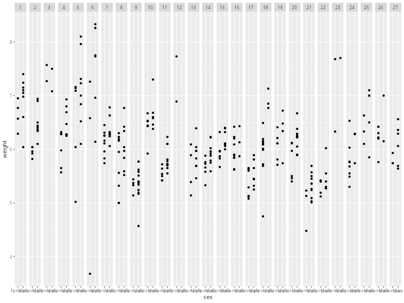

Additional Options in the 2-level Rat Pup Example#
Making sex Constant Across Litters#
As a point of comparison, what would happen if we treated sex as fixed rather than varying per-litter? In that case, it would not be random, so we removed any random element in the definition above. What random element is there? The error-term \(\phi_{jt}\). So the 2nd-level model would simplify to
which is simply saying that the effect of sex for litter \(k\) is simply the population effect of sex, as broken down into its main effect and interaction with whatever treatment that litter was given. This does not depend upon litter and so is the same for every litter. So the full model is now
Because the model for \(\alpha^{(k)}_{j}\) is simply an identity with no random error, we could collapse it back into Level 1 to give
Which now makes it clearer that this model only has a random intercept term, with everything else fixed. Collapsing all this together into mixed-effects form gives
… We can also see why we made the intercept explicit in the model formula earlier, because it more easily connects with why we are now using 1|litter instead of 1 + sex|litter.
lme.ratpup.2 <- lme(weight ~ sex*treatment, random= ~ 1|litter, data=ratpup)
summary(lme.ratpup.2)
Linear mixed-effects model fit by REML
Data: ratpup
AIC BIC logLik
439.6887 469.7346 -211.8444
Random effects:
Formula: ~1 | litter
(Intercept) Residual
StdDev: 0.5676074 0.4053673
Fixed effects: weight ~ sex * treatment
Value Std.Error DF t-value p-value
(Intercept) 6.212773 0.1885557 292 32.94928 0.0000
sexMale 0.415931 0.0734525 292 5.66259 0.0000
treatmentHigh -0.300908 0.2958837 24 -1.01698 0.3193
treatmentLow -0.325592 0.2659971 24 -1.22404 0.2328
sexMale:treatmentHigh -0.099680 0.1330752 292 -0.74905 0.4544
sexMale:treatmentLow -0.093269 0.1063180 292 -0.87726 0.3811
Correlation:
(Intr) sexMal trtmnH trtmnL sxMl:H
sexMale -0.228
treatmentHigh -0.637 0.146
treatmentLow -0.709 0.162 0.452
sexMale:treatmentHigh 0.126 -0.552 -0.232 -0.089
sexMale:treatmentLow 0.158 -0.691 -0.101 -0.205 0.381
Standardized Within-Group Residuals:
Min Q1 Med Q3 Max
-7.358181418 -0.484194371 0.008458083 0.557578982 3.086834875
Number of Observations: 322
Number of Groups: 27
lme.ratpup.1.ml <- update(lme.ratpup.1, method='ML', control=lmeControl(opt='optim'))
lme.ratpup.2.ml <- update(lme.ratpup.2, method='ML', control=lmeControl(opt='optim'))
anova(lme.ratpup.2.ml, lme.ratpup.1.ml)
Model df AIC BIC logLik Test L.Ratio p-value
lme.ratpup.2.ml 1 8 425.9672 456.1636 -204.9836
lme.ratpup.1.ml 2 10 425.2734 463.0189 -202.6367 1 vs 2 4.693801 0.0957
So, in this case, there is still a degree of ambiguity. There is a suggestion here that assuming a global effect of sex across all litters is acceptable. This does match with some degree of biological intution.
library(ggplot2)
ggplot(ratpup, # first 5 litters
aes(x=sex, y=weight)) +
geom_point() +
geom_smooth() +
facet_grid(~litter)

`geom_smooth()` using method = 'loess' and formula = 'y ~ x'
Adding litsize#
… Have a go at trying to do this yourself and then have a look in the drop-down below for one particular way of doing this.
The 3-level Clustered Data Example#
Answer questions to build model then share answer? Students can follow the process and see where they may have gone wrong?